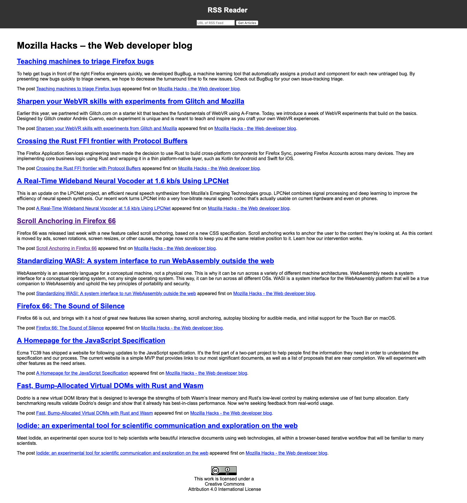

rss reader

RPS

Flatland

The projects That I Have Worked On


RSS Reader:
This project is an rss reader website, what this site does is when you enter a link in the input field for the url and click on the button add feed the javascriptis triggered and it reterieves the articles from the specified rss feed. the article is displated in the main section. The technologies thate were used for this project were Javascript, css, html and github
Rock-Paper-Scissors:
This project represents a game in where you vs the computer in a game of rock paper scissors.In the head section it inculeds the metadata about the project, in the body section it includes the header and 3 buttons which have an onclick attribute which connects to the javascript function play(). there is also a link which when it is clicked it takes you to an instruction page of how to play rock paper scissors. The technologies thate were used for this project were Javascript, css, html and github
Flatland:
The flatland project contains a square which when hovered over changes colour and when that square is clicked on it displays a random buzzword from the words provided in the javascript. when the initial page loades it presents a greeting saying welcome to flatland. The technologies thate were used for this project were Javascript, css, html and github
Todo:
The todo list project is a webpage that you are able to enter tasks and be able to check them off then you are done with them and also you are able to uncheck them if you have not finished with them. There are also three buttons named all, active and completed when you click on the all button you will be able to view all the tasks including the tasks that you chave checked, if you click on the active button it will show you all the current tasks and finally if you click on the completed button you will be able to see all the tasks that have been completed. The technologies thate were used for this project were Javascript, css, html and github
Web Design 1:
This is the first webdesign that had been created it outlines the basic HTML5 tags and how to structure and insert text into the body this website is purely based on html, it also shows the images and links that can be applied. THe technologies that have been used for this project are HTML and github.
Web Design 2:
this project is building on the first website that was done it outlines all the HTML that had been used in the first webpage. This website adds onto it by adding a css file which enables the design for the website in the css it adds the colour, boarders, paddings, be able to change the design of the body, headder, context, footer and much more. With the css it was able to change the whole design of the website.The technologies used for this website are HTML, CSS and github